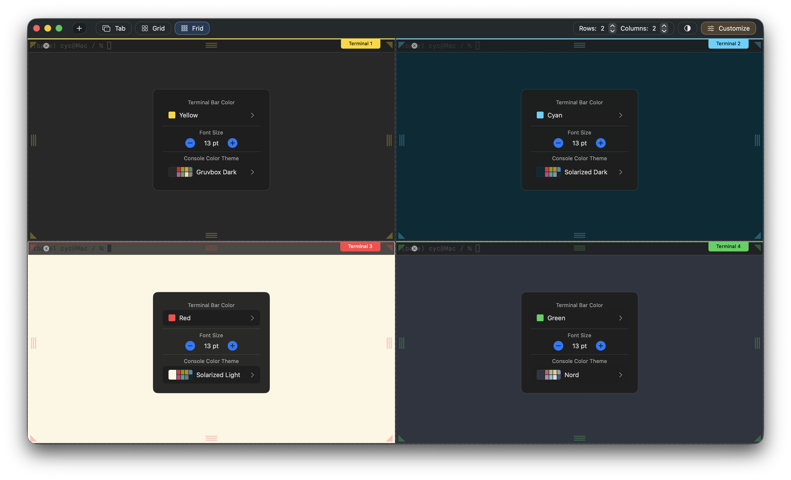
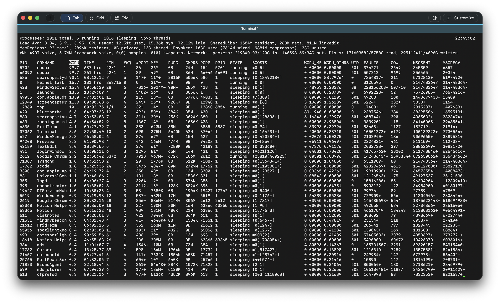

Mouse-first control
Resize and rebalance your workspace in seconds.
Pull boundaries, expand active work areas, and shrink background panes as your focus changes. The interface makes spatial editing immediate and obvious.

From the author:
This free terminal app is not meant to be competing with all the prestigious terminal apps out there in the community.
I built it to help my own multi-agent workflow and I add new features as I need, thanks to the help with AI.
If this app happens to be of interest to you, feel free to send feature request to also make it a terminal app that suits your needs.
FridTerm supports a flexible grid system. Drag terminals into place, resize them with the mouse, and build layouts that match your workflow.

Mouse-first control
Pull boundaries, expand active work areas, and shrink background panes as your focus changes. The interface makes spatial editing immediate and obvious.
Live color customization
Tune your terminal appearance without guesswork. FridTerm lets you adjust theme colors and immediately see them applied, making experimentation part of the workflow.

Multiple display modes
FridTerm supports classic tabs, structured grid layouts, and the full Frid mode so the same terminal session can be shown in the format that fits the moment.

Signature feature
FridTerm gives you a workspace you can shape directly with the mouse. Move terminals where they belong, create layouts around context, and keep related tasks visible at once.